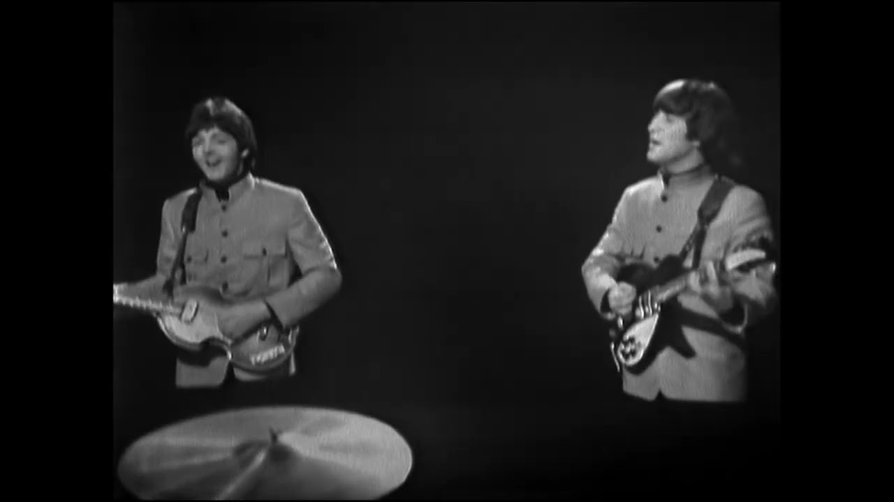

Top Of The Pops
April 10, 1965
The recording of the Beatles playing TOTP in 1965 was deleted by the BBC, to save money, but before they deleted it, they used it in a scene from Doctor Who, the clip on YouTube below is exactly the scene in which the Beatles appear playing Ticket To Ride in 1080p!
